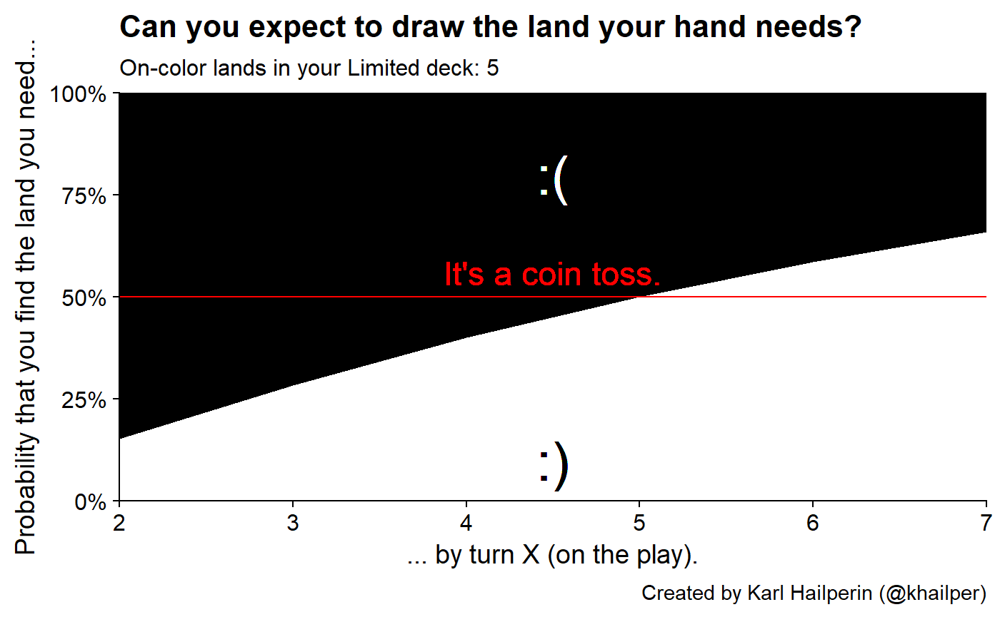
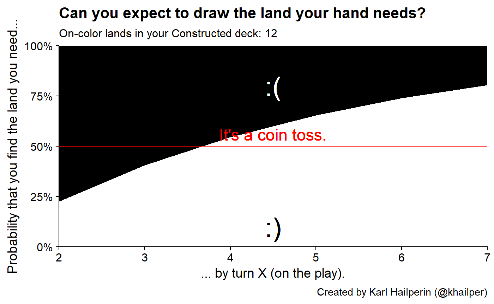

vignettes/dont-keep-medicore-hands.Rmd
dont-keep-medicore-hands.Rmdlibrary(tidyverse)
#> -- Attaching packages ----------------------------------------------------------- tidyverse 1.2.1 --
#> v ggplot2 3.2.0 v purrr 0.3.2
#> v tibble 2.1.3 v dplyr 0.8.2
#> v tidyr 0.8.3 v stringr 1.4.0
#> v readr 1.3.1 v forcats 0.4.0
#> -- Conflicts -------------------------------------------------------------- tidyverse_conflicts() --
#> x dplyr::filter() masks stats::filter()
#> x dplyr::lag() masks stats::lag()
library(scales)
#>
#> Attaching package: 'scales'
#> The following object is masked from 'package:purrr':
#>
#> discard
#> The following object is masked from 'package:readr':
#>
#> col_factor
library(cowplot)
#>
#> *******************************************************
#> Note: cowplot does not change the default ggplot2 theme
#> anymore. To recover the previous behavior, execute:
#> theme_set(theme_cowplot())
#> *******************************************************
library(gganimate)
library(mtggplot)A classic problem is should you keep a hand that has important spells, but not the right lands to cast them. Limited is my typical non-causual format, so we’ll start by calculating the probabilites for 40 card decks.
create_hits_distibution <- function(land_count, deck_size){
tibble(turn = 2:7) %>%
# mental model by anology: on turn 3, prob that you drew a land on either
# of your two draw steps, plus the probability you drew two lands between
# the two draw steps
mutate(total_hits = map(turn, ~ seq(1, .x - 1))) %>%
unnest() %>%
mutate(prob = dhyper(x = total_hits,
m = land_count,
# non-land cards (or off-color lands)
# assume we're on the play
n = deck_size - 7 - (land_count),
k = turn - 1),
possible_hits = land_count
) %>%
group_by(turn, possible_hits) %>%
summarise(prob_of_at_least_one_hit = sum(prob)) %>%
identity()
}limited_gif <- ggplot(limited_data,
aes(turn,
y = prob_of_at_least_one_hit)) +
geom_area(fill = "white") +
geom_hline(yintercept = 0.5, color = "red")+
geom_text(x = 4.5,
y = 0.5,
label = "It's a coin toss.",
vjust = -0.5,
color = "red",
size = 6) +
geom_text(x = 4.5, y = 0.8, label = ":(", color = "white", size = 10) +
geom_text(x = 4.5, y = 0.1, label = ":)", color = "black", size = 10) +
transition_states(possible_hits, transition_length = 1, state_length = 2) +
theme_cowplot() +
theme(panel.background = element_rect(fill = 'black')) +
scale_x_continuous(expand = c(0, 0)) +
scale_y_continuous(labels = percent_format(),
limits = c(0, 1),
expand = c(0, 0)) +
labs(y = "Probability that you find the land you need...",
x = "... by turn X (on the play).",
title = "Can you expect to draw the land your hand needs?",
subtitle = "On-color lands in your Limited deck: {next_state}",
caption = "Created by Karl Hailperin (@khailper)")
limited_gif
constructed_gif <- ggplot(constructed_data,
aes(turn,
y = prob_of_at_least_one_hit)) +
geom_area(fill = "white") +
geom_hline(yintercept = 0.5, color = "red")+
geom_text(x = 4.5,
y = 0.5,
label = "It's a coin toss.",
vjust = -0.5,
color = "red",
size = 6) +
geom_text(x = 4.5, y = 0.8, label = ":(", color = "white", size = 10) +
geom_text(x = 4.5, y = 0.1, label = ":)", color = "black", size = 10) +
transition_states(possible_hits, transition_length = 1, state_length = 2) +
theme_cowplot() +
theme(panel.background = element_rect(fill = 'black')) +
scale_x_continuous(expand = c(0, 0)) +
scale_y_continuous(labels = percent_format(),
limits = c(0, 1),
expand = c(0, 0)) +
labs(y = "Probability that you find the land you need...",
x = "... by turn X (on the play).",
title = "Can you expect to draw the land your hand needs?",
subtitle = "On-color lands in your Constructed deck: {next_state}",
caption = "Created by Karl Hailperin (@khailper)")
constructed_gif